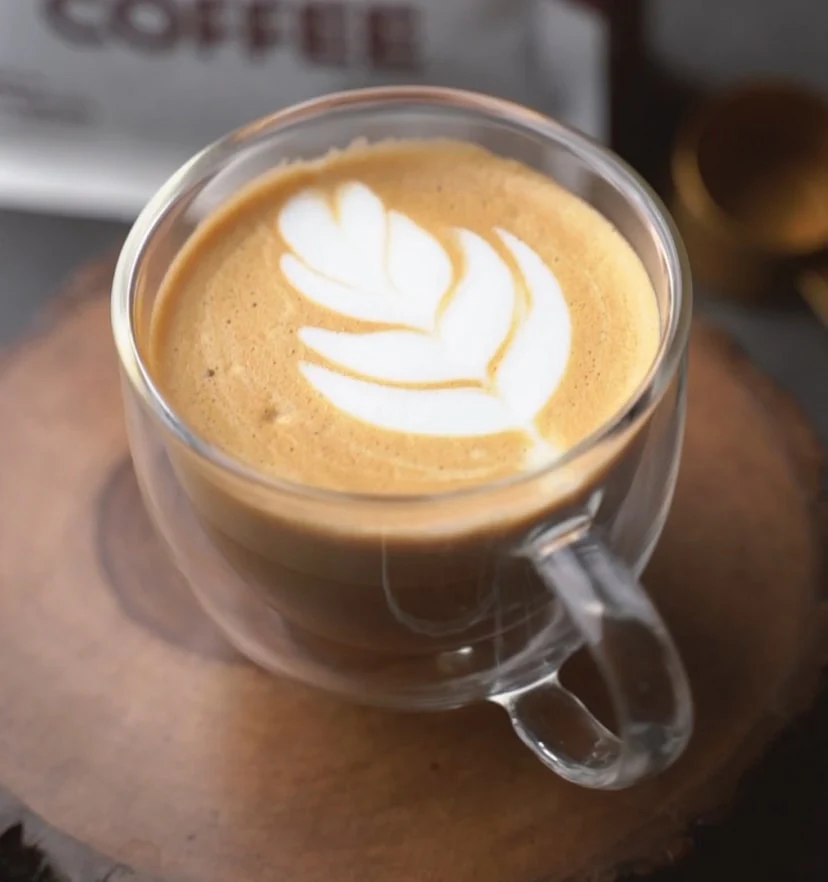
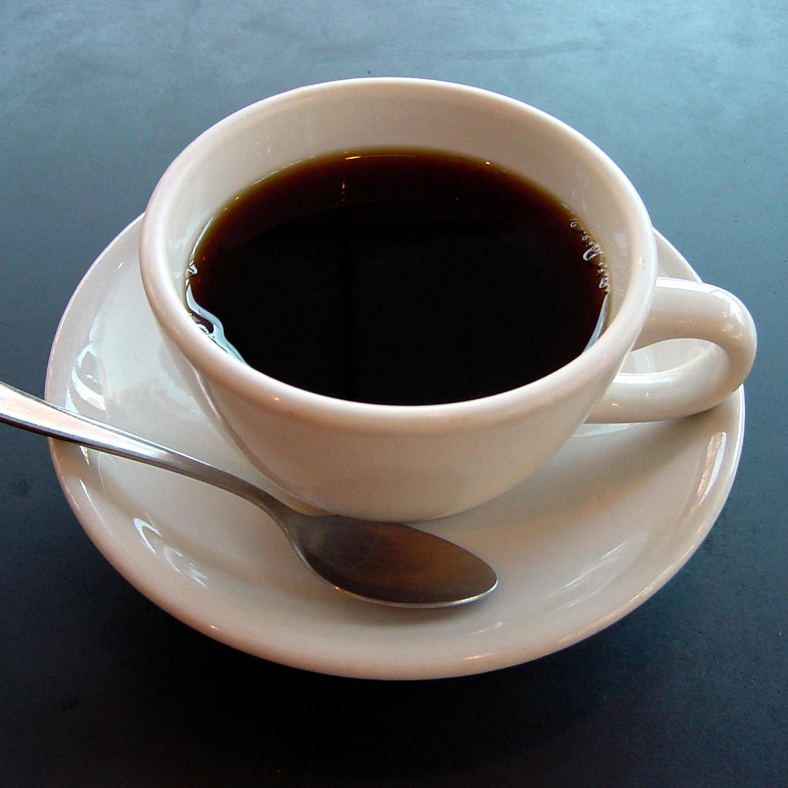
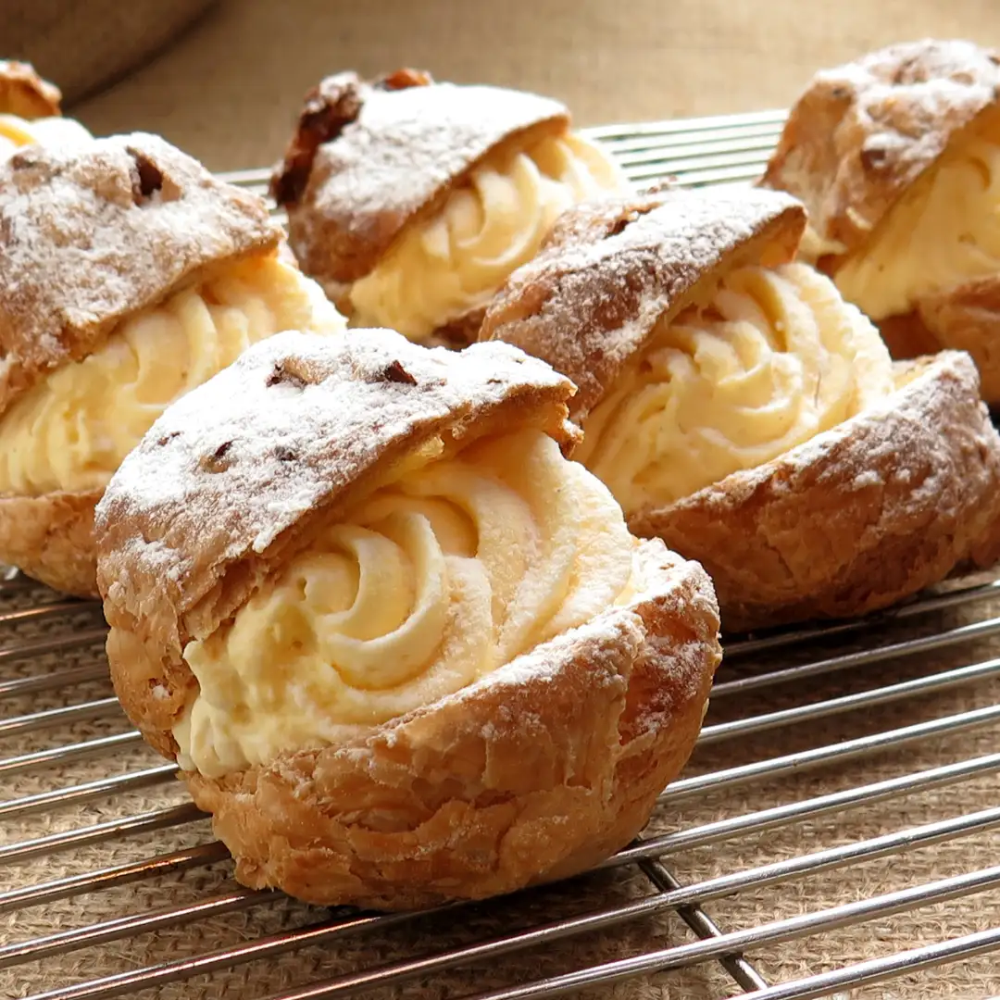
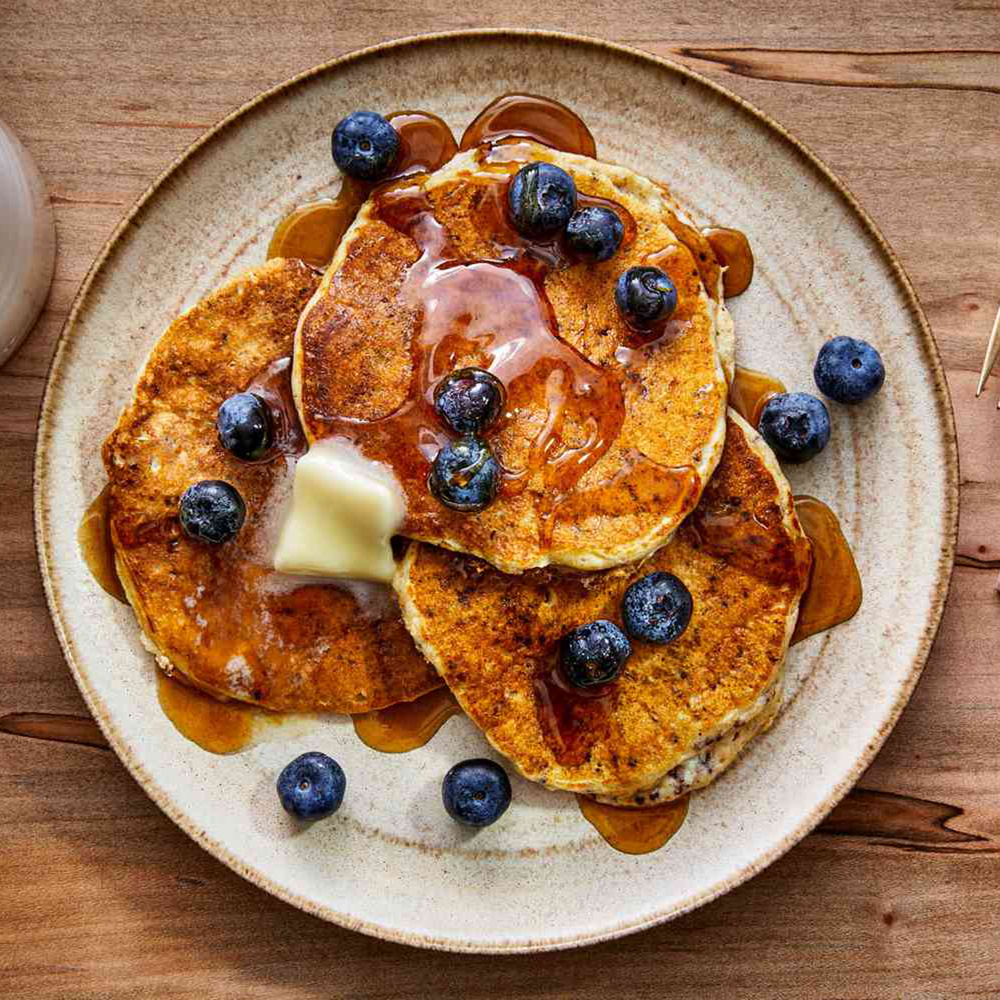

Welcome to my cafe restaurant
A café is typically an informal place that serves coffee, tea, pastries, sandwiches, and other simple foods. Many cafés have a comfortable atmosphere with tables and chairs where customers can sit, study, meet friends, or enjoy a drink. Some cafés also have outdoor seating called a sidewalk café.
Most café restaurants serve a variety of hot and cold drinks, such as coffee, espresso, cappuccino, latte, tea, and fresh juices. They also offer light foods like sandwiches, salads, pastries, cakes, cookies, and sometimes breakfast dishes like eggs or toast. Some cafés also serve small lunch or dinner meals.
The environment in a café restaurant is usually warm and welcoming. The furniture often includes small tables, comfortable chairs, and sometimes sofas. Decorations may include plants, artwork, and soft lighting to create a cozy feeling. Many cafés also play quiet music to make the space relaxing.
Café restaurants are popular places for socializing, studying, and working. Students often bring laptops or books, and friends meet there to talk or enjoy coffee together. Some cafés also provide free Wi-Fi, making them a convenient place for people to work or browse the internet.
Schedules
Time
6AM - 9PM
6AM - 12AM
6AM - 6PM
Daily
Monday to Friday
Saturday
Sunday
Pick your order if you want.

Latte Cafe
A latte is a warm, creamy coffee drink made by combining one or two shots of espresso with steamed milk and a thin layer of milk foam on top. It has a smooth, slightly sweet flavor because the milk softens the strong taste of the espresso. Lattes are usually served in a large cup or glass and often feature decorative latte art on the foam.
Coffee
Coffee is a dark, flavorful beverage made from roasted coffee beans. It usually has a rich aroma, bold taste, and mild bitterness. People often drink it hot or iced, sometimes adding milk, cream, or sugar.


Pastrie
Pastries are baked foods made from dough, usually using flour, butter, sugar, and sometimes eggs. They are often light, flaky, or soft in texture and can be either sweet or savory.
Pancake
A pancake is a soft, flat, round food made from a simple batter of flour, eggs, milk, and sugar. It is cooked on a hot pan or griddle until it becomes golden brown on both sides.
